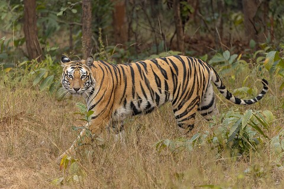
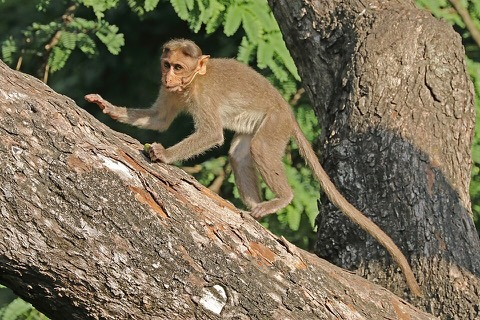
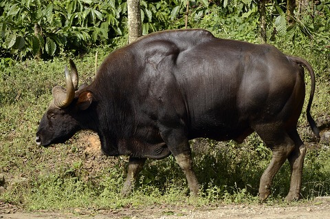
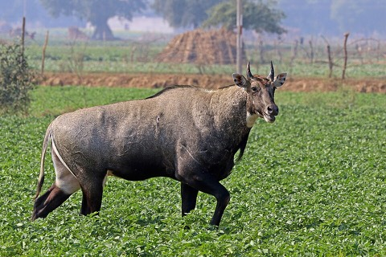

Good Afternoon,
Sourav Tambe 👋🏻
My Species Edit 

Asiatic lion9 animals

Bengal tiger6 animals

Bonnet macaque27 animals

Gaur12 animals

Nilgai40 animals
Five backgrounds for V2’s mint header, each behind a faithful copy of the header as it is today. Everything is drawn in the header’s own colours: its mint, the teal ink, white, and a touch of the brand green. The art sits where the header has room, so the greeting, search and species cards read exactly as they do now.



